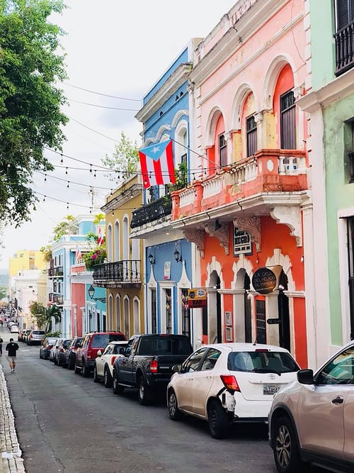
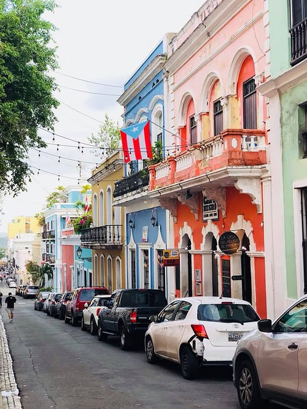

College: Clemson University
Major: Electrical Engineering
Connect in LinkedIn
I love going on runs and hikes with my dogs or alone if I can't take them with me. I usually go for one or two miles each day.
 

I enjoy learning languages. My native languages are Spanish and English, even though I learned Spanish first. I can also speak German pretty well; however I am not yet somewhere I would call myself fluent in this language. I am also interested in Russian, French and a lot of other ones.
Reading recently became a favorite hobby for me. I now enjoy it more than watching TV. This month I read Aldous Huxley's "Brave New World" and "The Doors of Perception", and Herman Hesse's "Siddhartha". I am currently reading the book in the picture, "Brothers of Auschwitz", by Malka Adler. I have not read the books in the pictures but would love to one day.

This is my first dog Tank. Tank is 2 years old and about to turn 3 in February. He is super friendly with people and other pets, playful, and loves walks and runs.

This is my second dog Lucas. Originally my mom's dog, he was given to me after another one of her dogs had a litter. Lucas is friendly but only with people, and loves walks and runs.